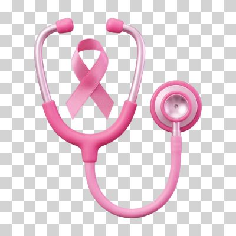

Como se prevenir?
Pratique atividades físicas
Mexer o corpo regularmente ajuda a equilibrar os níveis hormonais e a fortalecer o sistema de defesa do organismo. Praticar caminhada, corrida, dança ou musculação reduz significativamente o risco de desenvolver o câncer de mama.
Alimente-se bem
Uma dieta rica em alimentos naturais — como frutas, legumes, verduras, grãos integrais e proteínas magras — protege as células do corpo. Evitar o consumo de alimentos ultraprocessados e o excesso de açúcar ajuda a manter o peso sob controle, o que é fundamental para a prevenção.

Exames regulares
A mamografia é o exame definitivo para identificar alterações na mama antes mesmo que elas possam ser sentidas no toque. Mulheres a partir dos 40 anos devem realizar o exame anualmente, pois o diagnóstico precoce eleva as chances de cura para mais de 95%.